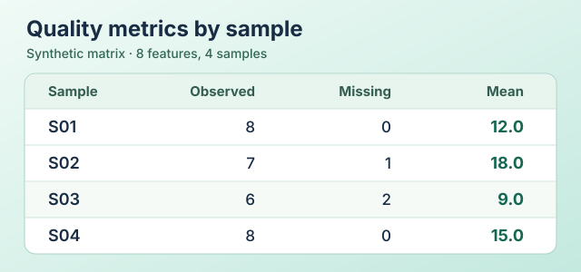

Analysis methods
Sample quality summary
Calculate observed and missing values, mean, standard deviation and coefficient of variation for each sample.
Plugin v1.0.0EMP 10.0.0+
Install in EMP ↗ Download plugin.json Source on GitHub ↗Plugin preview

Install and use
Online installation requires EMP 10.4 or later. The install button opens port 8080 on this computer. For another address, open Plugins in that EMP instance.
- In EMP 10.4 or later, open Plugins and select Install and enable.
- Import a numeric matrix. In Plugins, choose the experiment, primary assay and Sample quality summary.
- Select Run analysis. In EMP 10.2 or later, choose the metrics to compute in Settings.
Use features as rows and samples as columns. The coefficient of variation is the sample standard deviation divided by its mean. A zero mean gives a missing result.
Permissions
assay.read reads the selected matrix. job.result.write saves the new analysis result.